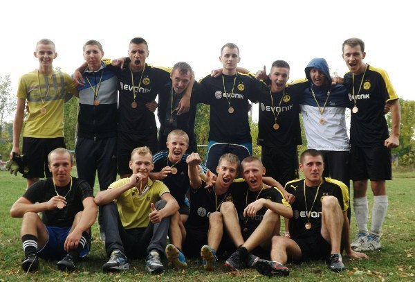
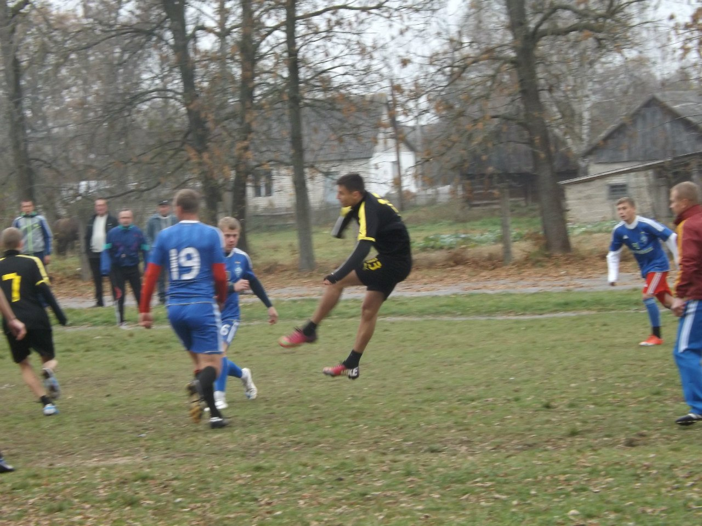
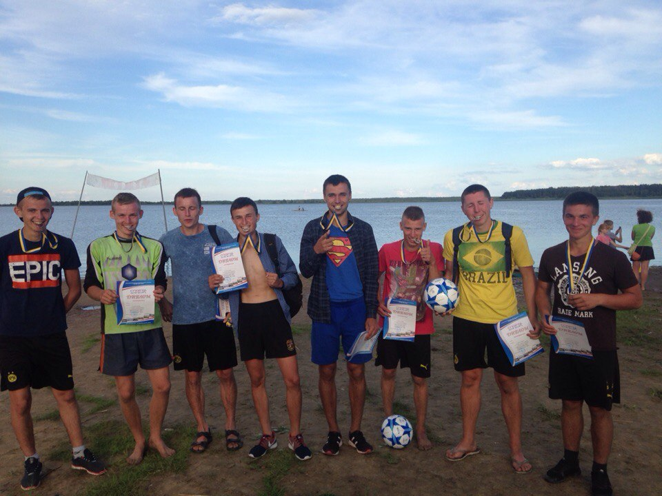

Звичайно ж усе почалося з футболу. Це, напевно, найбільш популярний на сьогодні вид спорту й, щиро кажучи, лише йому було під силу прокрастися в таке невеличке містечко як моє. В найдавніших своїх спогадах я раз по раз повстаю з м'ячем, на стадіоні, в школі, вдома, на ставку зимою( так ми грали в футбол на льоді), в друзів. В школі мені певно вдавалося найкраще контролювати м'яч, пробивати по воротах і т.д. Приблизно в 10-11 класі мене почали доганяти однолітки й перевершувати в деяких аспектах гри й це був ідеальний момент аби почати розуміти слово команда, бо наша гра дуже відрізнялася від гри старшого покоління і ми трималися один одного, майже щодня намагаючись, на той час безуспішно, перемогти в них. Нам не вистачало реалізації, хоча ми вважали що наша гра краща: ми робили більше передач, більше бігали й більше створювали моментів, але постійно програвало Та це не зломило нас і ми залишилися вірними своїй грі. Дорослішаючи, ми вирівняли ситуацію й перевершили старше покоління, а поєднавшись з ними в команду суміли взяти декілька регіональних чемпіонств та кубків. Ми завоювали авторитет складного суперника, незважаючи на те, що команда з нашого села вже більше десятиріччя не була конекрентноспроможна й незважаючи на те, що у нас не було ані тренера, ані грошей.
Зайнятися футболом було не складно: в селі він завжди на слуху, всі знайомі ще з дитинства обговорюють матчі збірної та ліги чемпіонів, усі гравці мали свою власну улюблену команду. Буде цікаво дослідити натомість чому я займався волейболом. В дев'ятому класі я вже досить непогано оволодів певними навичками гри в нападі та захисті й почав грати на регіональних змаганнях. Був період взимку, десь місяць - два, коли волейбол витісняв футбол і займав першу позицію. А якщо в тебе трішки виходить, то тебе запрошують грати, тож я почав грати зі старшими й набиратися досвіду. Здебільшого у волейбол грали ті ж самі, хто грав у футбол, робили таку-собі перерву, з деякими винятками. Велику роль у мотивації займатися цим видом спорту відіграв мій старший брат, який в той час вчився в університеті, і це були одні з найкращих й найцікавіших історій для мене, історії про університетські змагання. В них я бачив вершину професіоналізму й майстерності. Йому дійсно було цікаво розповідати, він захоплювався цим і я також почав. В 10 класі, після регіональних змагань мене запросили в команду, яку формували для обласних змаганнь. Я був у захваті, бо з усіх знайомих мені запрошували тільки мого брата й в 11 класі. Йому так і не вдалося поїхати через травму, тож це було справді досягнення для мене, бо це було щось нове. Ми не здобули ніяких призових місць, але я був в цілковитому захваті. У випускному класі я вже їхав у якості лідера команди й нам вдалося зайняти друге місце і це був успіх для мене. Після цього мене взяли в дорослу регіональну команду й пів року тричі на тиждень мені потрібно було їздити на тренування. Оскільки до містечка близько 15 кілометрів, а автобус їздить двічі на день, то я виїжджав о третій аби потрапити о сьомій в спортзал. Щоб вернутися додому мені доводилося знову ж таки чекати годину автобус, який скорочував відстань додому на 7-8 км, а там мене уже забирав тато на авто. Особливим моментом цього життя стали поїздки на різні змагання. Мені дуже подобалося це, тож, не маючи ніяких більше цілей в житті, я вирішив ще пограти у волейбол й поступив до Луцька на фізкультурний факультет. Там волейбол був ще на голову кращий та цікавіший, тож тепер я більше грав у нього, а у футбол - влітку. Чотири роки навчання повністю виправдали мої очікування: ми приймали участь у змаганнях, багато тренувалися, вивчали різноманітні комбінації та переміщення.
Під кінець навчання у мене виникло бажання навчатися чомусь ще. Велику роль у виборі виду спорту зіграв мій друг з університету, який займався бойовими мистецтвами. Спочатку я спробував бої без правил, мені сподобалося але вистачило мене десь на 4 місяці. Потім друг порекомендував мені боксерську залу де займався сам, а там мене скерували в групу для новачків або точніше буде сказати: з новачків та людей які не прагнули виступати на якихось змаганнях. Бокс захопив мене більше: я купив собі все що потрібно, почав переглядати бої найкращих в цьому виді спорту, на ютубі додатково дивитися різні уроки й відпрацьовувати рухи з тренувань за будь-якої можливості. Загалом я тренуюся по три-чотири місяці потім роблю перерву десь на такий самий термін. Так виходить тому, що я часто переїжаю в пошуку роботи, але завжди повертаюся. Сумарно займаюся вже біля двох років, тож і виходить у мене вже досить непогано. На майбутнє планую ще декілька таких періодів тренувань.
Поза цим я ще два роки ходив до спортзали, три-чотири рази в тиждень. В період коли займався волейболом і боями без правил. Часто виходжу на пробіжки, теж періодами. Минулого літа я спробував теніс і мені дуже сподобалося, тож можливо це буде наступний вид спорту, якому буду приділяти більше уваги й почну тренуватися, не знаю. Надіюсь що так і станеться й видів спорту мені вистачить на все життя.
  